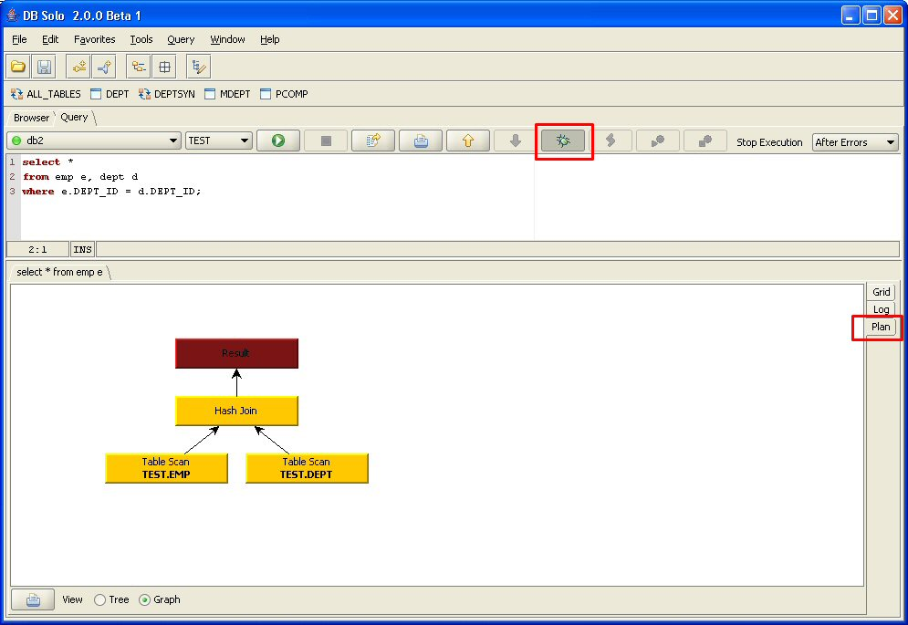
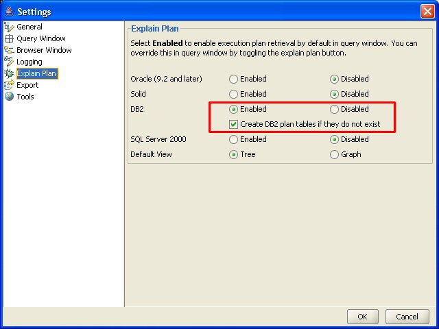

Explain plan is a feature that allows you to view the execution plan of a query in a tree / table format. When you execute your queries in the query window and the execution plan is available, you can view the plan under the 'Plan' tab. This feature is useful for troubleshooting problems with slow queries, the plan may reveal that the optimizer decided to do use a plan that was unexpected.
Explain plan feature is supported for Postgres, Oracle, Microsoft SQL Server, DB2 and solidDB. To enable execution plan retrieval, make sure the 'Explain Plan' button is selected int the query window, type in your query and click on the 'Run' button. When the query has been completed, there is a third tab in the results window named 'Plan'. Select the 'Plan' tab and you will see the execution plan in two different formats; tree view and graph view.
Notice that in many cases the explain plan feature carries considerable overhead, therefore it is recommended to enable this feature only when it is needed.

Figure - Explain Plan Output
Explain Plan is supported on Oracle version 9.2 and later. Notice that the user executing the query needs to have read access to several V$ tables, so it is recommended to grant the user the SELECT_CATALOG_ROLE role or SELECT ANY DICTIONARY system privilege.
Unlike many other products, DB Solo does not require special explain plan table to be present for this feature.
No special privileges or setup task are required for SQL Server.
No special privileges or setup task are required for PostgreSQL.
The explain plan feature in DB2 requires several plan tables to be present in schema corresponding to the login used to connect to the database. In other words, changing the schema in the query window will NOT affect the schema where the plan tables need to be. You can create the necessary tables by running a script named EXPLAIN.DDL that is part of your DB2 installation, typically in a directory named 'MISC'. DB Solo can also create these tables automatically if they are not present when the explain plan feature is used. To instruct DB Solo to create the tables automatically, go to settings, Explain Plan and check the 'Create DB2 plan tables..' checkbox and click on 'OK'.

Figure - Explain Plan Settings Options
No special privileges or setup tasks are required for solidDB.
| Back to Index | DB Solo www.dbsolo.com support@dbsolo.com |